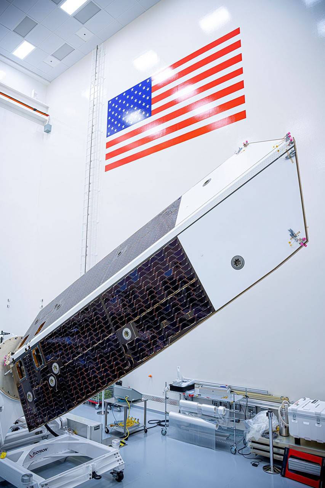
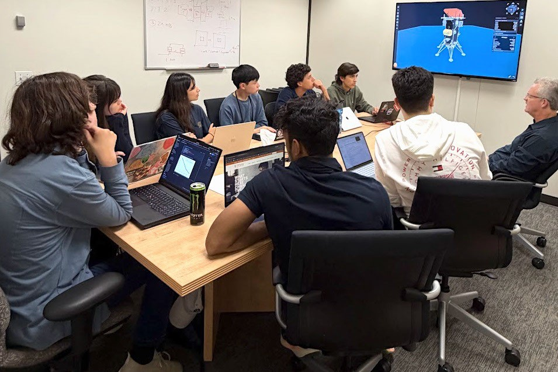

01
Reeleito, Lula enfrenta quebra-cabeça para acomodar aliados e blindar governo no Congresso
Plantão Brasil · 26/10/2026 · 23:06 (Brasília)Fonte original ↗
www.msn.comO que esperar das eleições intercalares da próxima semana www.dnoticias.ptAtaques russos contra energia são crimes de lesa-humanidade
www.dnoticias.ptAtaques russos contra energia são crimes de lesa-humanidade Українські Національні Новини (УНН)A Ucrânia enfrenta um “inverno rigoroso” e Putin não busca a paz – Kallas emite um alerta terrívelwww.msn.comEUA e dezenas de países alertam sobre o risco de fome no Sudão e pedem ajudaThe NationalÚltimas notícias sobre o Oriente Médio: Irã e países do pacto de defesa de Meca mantêm conversações para acalmar tensões
Українські Національні Новини (УНН)A Ucrânia enfrenta um “inverno rigoroso” e Putin não busca a paz – Kallas emite um alerta terrívelwww.msn.comEUA e dezenas de países alertam sobre o risco de fome no Sudão e pedem ajudaThe NationalÚltimas notícias sobre o Oriente Médio: Irã e países do pacto de defesa de Meca mantêm conversações para acalmar tensões Spaceflight NowWest Coast Falcon 9 rocket to launch 27 Starlink satellitesPacific Media Network‘He gives us genuine flexibility’: Fainga’anuku returns to All BlacksNoticias AmbientalesGelo antártico afunda mais de seis metros devido a lago drenado escondido, revela estudo da NASAYeni Şafak EnglishSisi tells Guterres Palestinian issue needs 'just' settlement
Spaceflight NowWest Coast Falcon 9 rocket to launch 27 Starlink satellitesPacific Media Network‘He gives us genuine flexibility’: Fainga’anuku returns to All BlacksNoticias AmbientalesGelo antártico afunda mais de seis metros devido a lago drenado escondido, revela estudo da NASAYeni Şafak EnglishSisi tells Guterres Palestinian issue needs 'just' settlement BenzingaChuck Schumer chama os estoques de petróleo de Trump de 'obscenos' à medida que as provas intermediárias se aproximam - Fundo de Petróleo dos Estados Unidos (ARCA:USO)www.msn.comPaíses do Pacto de Defesa Saudita pressionam pela paz em Teerã enquanto Houthis lançam mais ataquesInternational Policy DigestUcrânia e o desmoronamento da unidade transatlântica
BenzingaChuck Schumer chama os estoques de petróleo de Trump de 'obscenos' à medida que as provas intermediárias se aproximam - Fundo de Petróleo dos Estados Unidos (ARCA:USO)www.msn.comPaíses do Pacto de Defesa Saudita pressionam pela paz em Teerã enquanto Houthis lançam mais ataquesInternational Policy DigestUcrânia e o desmoronamento da unidade transatlântica bitterwinter.orgRepression Without Borders: China Detains Taiwanese Yiguandao FollowersNature World NewsCasos de Ebola em Bundibugyo chegam a 10.000 enquanto o Congo inicia o primeiro teste de vacina e os EUA adicionam um atestado de viagemThe Indian ExpressAtualizações AO VIVO das eleições de Israel em 2026: Netanyahu e a coalizão de extrema direita enfrentam a primeira votação desde 7 de outubro e a invasão de Gaza조선일보U.S. Military’s 1-Hour Space Delivery Cuts 12-Hour Fighter Jet TimePost CourierReflexões sobre três décadas de negociações com o Embaixador Ian FryDrug Discovery NewsCan virtual control groups strengthen nonclinical safety assessment?
bitterwinter.orgRepression Without Borders: China Detains Taiwanese Yiguandao FollowersNature World NewsCasos de Ebola em Bundibugyo chegam a 10.000 enquanto o Congo inicia o primeiro teste de vacina e os EUA adicionam um atestado de viagemThe Indian ExpressAtualizações AO VIVO das eleições de Israel em 2026: Netanyahu e a coalizão de extrema direita enfrentam a primeira votação desde 7 de outubro e a invasão de Gaza조선일보U.S. Military’s 1-Hour Space Delivery Cuts 12-Hour Fighter Jet TimePost CourierReflexões sobre três décadas de negociações com o Embaixador Ian FryDrug Discovery NewsCan virtual control groups strengthen nonclinical safety assessment? www.ntd.comEUA atualizam avisos de viagem para americanos em 13 países do Oriente Médio em meio a conflitosThe GuardianQuais são as corridas a observar nas eleições intercalares dos EUA e por que são importantes?The Muslim NewsCúpula Quadrilateral de Segurança do Oriente Médio realizada por Türkiye, Arábia Saudita, Paquistão e Irã concordam em continuar as negociações de segurança regional enquanto Israel mata 4 palestinos em Gaza - Muslim News UKPakistan ObserverEpic fury-2
www.ntd.comEUA atualizam avisos de viagem para americanos em 13 países do Oriente Médio em meio a conflitosThe GuardianQuais são as corridas a observar nas eleições intercalares dos EUA e por que são importantes?The Muslim NewsCúpula Quadrilateral de Segurança do Oriente Médio realizada por Türkiye, Arábia Saudita, Paquistão e Irã concordam em continuar as negociações de segurança regional enquanto Israel mata 4 palestinos em Gaza - Muslim News UKPakistan ObserverEpic fury-2 Executive DigestEurodeputados em visita oficial à China para abordar tensões comerciais com a UEMirage NewsDeclaração do Departamento de Estado dos EUA sobre a Fome no Sudãoncnews.com.brComissão da ONU acusa Israel de manter genocídio em Gaza após cessar-fogoPhys.org27 alvos de exoplanetas para o primeiro telescópio espacial privado do mundoMirage NewsU.S., Pacific Island Police Ministers Issue Joint CommuniquéLamont-Doherty Earth ObservatoryComo uma enorme plataforma de gelo antiga estabilizou as geleiras – e o que isso significa para a Antárticaطقس العربUm sistema de baixa pressão e tempestades afectarão grandes áreas do mundo árabe nos próximos dias.Open MagazineTrump Offers $1 Million Voter Fraud Reward, Questions Brazil Result & Backs NetanyahuNewVision.co.ugMundo: Observações de Xi sobre defesa da autoridade e papel da ONUCanal RuralUm colecionador nascido na Alemanha em 1885 juntou animais, insetos e pedras para ensinar alunos: a pequena cidade catarinense que transformou o acervo em museu público
Executive DigestEurodeputados em visita oficial à China para abordar tensões comerciais com a UEMirage NewsDeclaração do Departamento de Estado dos EUA sobre a Fome no Sudãoncnews.com.brComissão da ONU acusa Israel de manter genocídio em Gaza após cessar-fogoPhys.org27 alvos de exoplanetas para o primeiro telescópio espacial privado do mundoMirage NewsU.S., Pacific Island Police Ministers Issue Joint CommuniquéLamont-Doherty Earth ObservatoryComo uma enorme plataforma de gelo antiga estabilizou as geleiras – e o que isso significa para a Antárticaطقس العربUm sistema de baixa pressão e tempestades afectarão grandes áreas do mundo árabe nos próximos dias.Open MagazineTrump Offers $1 Million Voter Fraud Reward, Questions Brazil Result & Backs NetanyahuNewVision.co.ugMundo: Observações de Xi sobre defesa da autoridade e papel da ONUCanal RuralUm colecionador nascido na Alemanha em 1885 juntou animais, insetos e pedras para ensinar alunos: a pequena cidade catarinense que transformou o acervo em museu públicoUma comissão independente de inquérito declarou como crimes de guerra e contra a humanidade os contínuos ataques da Rússia contra a infra-estrutura energética da Ucrânia, num relatório que vai ser apresentado à ONU.
Últimas notícias sobre o Oriente Médio: Irã e países do pacto de defesa de Makka mantêm negociações para acalmar as tensões The National
Gelo antártico afunda mais de seis metros devido a lago drenado oculto, revela estudo da NASA Noticias Ambientales
Chuck Schumer chama os estoques de petróleo de Trump de 'obscenos' à medida que as provas intermediárias se aproximam - Fundo de Petróleo dos Estados Unidos (ARCA: USO) Benzinga
A Ucrânia e o Desvendamento da Unidade Transatlântica Resumo da Política Internacional

Um número crescente de detenções expõe riscos crescentes para os crentes que atravessam o Estreito.
A Agência Nacional de Vigilância Sanitária (Anvisa) decidiu, nesta segunda (26), recolher e proibir a comercialização de dois produtos alimentícios, um picolé e um suplemento, por conterem ingredientes que não passaram por avaliação de segurança. O Picolé Bentô Gelatos Magnésio + Inositol Relief 3.0. , fabricado pela empresa ABB Gelateria Ltda, está proibido porque ingredientes do produto, a melatonina e o inositol, foram a utorizados apenas para uso em suplementos alimentares e em composto líquido pronto para consumo (inositol). Notícias relacionadas: Anvisa proíbe venda de teste de glicemia Accu-Check Active na Amazon. Anvisa aprova novo me
O Irão e os rebeldes Houthi apoiados pelo Irão lançaram mísseis e drones contra cidades, aeroportos, bases militares e instalações energéticas sauditas.

Cúpula Quadrilateral de Segurança no Oriente Médio realizada por Türkiye, Arábia Saudita, Paquistão e Irã concordam em continuar as negociações de segurança regional enquanto Israel mata 4 palestinos em Gaza - Muslim News UK The Muslim News
Declaração do Departamento de Estado dos EUA sobre Notícias da Miragem da Fome no Sudão
Como uma enorme plataforma de gelo antiga estabilizou geleiras - e o que isso significa para a Antártida Observatório Terrestre Lamont-Doherty
Mundo: Observações de Xi sobre a defesa da autoridade e o papel da ONU NewVision.co.ug
Palestinos mortos e campo de deslocados queimado em ataques israelenses - IMEMC News
Vitória de Lula abala mercados brasileiros por temores de onda de gastos Gulf News
As ações chinesas estão a cair ainda mais, após uma queda de 3,5 biliões de dólares no valor do mercado de ações do país.
Ribadu busca cooperação global mais forte para combater o terrorismo na África Agência de Notícias da Nigéria
NASA's planet hunter TESS has turned 96 slices of the sky into one map, revealing 679 confirmed worlds and 5,165 candidates Futura, le média qui explore le monde
A empresa de expedição australiana AE Expeditions está se preparando para a temporada antártica de 2026-27, com 27 viagens em três pequenos navios especialmente construídos, levando expedicionários da Península Antártica ao Mar de Ross e à Antártica Oriental. Mas nesta temporada, a aventura será mais do que chegar a alguns dos lugares mais remotos da Terra. Ao longo de 11 viagens, 18 cientistas se juntarão aos navios da AE Expeditions para realizar
O presidente do Partido Liberal (PL), Valdemar Costa Neto, publicou nota oficial, nesta segunda-feira (26), em que reconhece a vitória do presidente Luiz Inácio Lula da Silva nas eleições deste ano. No entanto, ele cobrou esclarecimentos sobre o que chamou de medidas “eleitoreiras”, com “ampliação de gastos públicos”. ““Reconhecemos o resultado presidencial, proclamado pelo Tribunal Superior Eleitoral (TSE), mas entendemos que os questionamentos levantados precisam ser devidamente esclarecidos”, afirmou a nota. Argumentos Notícias relacionadas: Moraes manda Flávio entregar passaporte e o proíbe de deixar o país . TSE nega acusação de Flávio s
Descrição Esta visão de 360 graus de Neretva Vallis dentro da cratera Jezero de Marte foi costurada usando 217 imagens adquiridas pela Mastcam-Z do rover em 20 de maio de 2024, o 1.155º dia marciano, ou sol, da missão. Embora hoje seja uma paisagem empoeirada varrida pelo vento, há bilhões de anos ela abrigava um canal de rio que alimentava água doce […]

Um trecho de água no oeste do continente é agora chamado de Canal Amos, em homenagem ao ex-jornalista da BBC.
Armadura espacial testada a 26.000 km/h chega à órbita pela primeira vez fish4news.co.uk
Parte 1: Como a influência comercial indevida prejudica a saúde no Centro de Comunicação de Saúde Pública Aotearoa da Nova Zelândia
O mercado financeiro brasileiro teve um dia de forte turbulência nesta segunda-feira (26), após a reeleição do presidente Luiz Inácio Lula da Silva no segundo turno das eleições presidenciais. O dólar fechou em alta de 8,21%, a R$ 5,403. O Ibovespa, principal índice da Bolsa de Valores brasileira, recuou 13,88% e atingiu os 176.608,23 pontos. Durante a manhã, a bolsa acionou o mecanismo de circuit breaker , que interrompe temporariamente as negociações diante de quedas acentuadas. Notícias relacionadas: Líderes estrangeiros reconhecem vitória e parabenizam Lula. Nas redes sociais, líderes latino-americanos saúdam Lula pela vitória. Imprensa i

Contenção da 'sangria' que levou o dólar acima de R$ 5,40 e a bolsa a ter negociação interrompida vai depender de sinalização do governo para ajuste das contas públicas, dizem analistas.
CSNU marca 30 anos de mandato para crianças e conflitos armados Mirage News
NASA busca acelerar e reduzir custos da ambiciosa Semana da Aviação Científica Espacial
Aumento de US$ 50 milhões para NSW Southern Murray-Darling Basin Mirage News
Políticos britânicos entre delegados internacionais proibidos de entrar na Cisjordânia The Guardian
A Europa está a tomar a sua defesa nas suas próprias mãos – cinco países líderes fizeram uma declaração importante sobre a OTAN Notícias Nacionais Ucranianas (UNN)
Mighty India busca o sexto título The Tribune
EUA comprometem mais de US$ 44 milhões para combater o crime transnacional no Pacífico Post Courier
Descoberta ganhadora do Prêmio Nobel conecta minas de Dakota do Sul à pesquisa no espaço profundo KOTA Territory News
Trump alerta sobre ‘depressão econômica ao estilo de 1929’ se os democratas vencerem o Congresso Social News XYZ
Chefe da ONU vê oportunidade para entendimentos sobre navegação em Hormuz e questão nuclear do Irã Social News XYZ
Estados europeus prometem aumentar o apoio de defesa aérea à Ucrânia Al Jazeera
O Sul da Ásia pré-guerra e a diplomacia moderna mundial
Delegações se reúnem no Irã com a região do Oriente Médio preocupada com o potencial de novos combates ABC News - Notícias de última hora, últimas notícias e vídeos
Ao longo de 1.645 dias marcianos, o rover Perseverance Mars da NASA mediu as partículas finas e ultrafinas de poeira marciana encontradas agarradas a amostras de materiais de trajes espaciais que são transportados a bordo do rover, incluindo alguns que são pequenos o suficiente para penetrar nos pulmões e entrar na corrente sanguínea. As conclusões serão publicadas terça-feira, 27 de outubro, no Proceedings of [...]
Gerry Harvey pede cortes nos serviços públicos à medida que os gastos do governo atingem o máximo em 40 anos ChannelNews.com.au
O Ministro da Defesa, Rajnath Singh, participará da reunião da ASEAN nas Filipinas Social News XYZ
Por que África não pode abandonar Cuba Vanguard News

Descrição O grande guarda-sol do Near-Earth Object Surveyor (NEO) da NASA é montado em um anel de montagem durante inspeções em uma sala limpa na BAE Systems Space & Mission Systems em Boulder, Colorado, em julho de 2026. A estrutura do guarda-sol tem 6 metros de altura e mede 2,4 metros de largura em sua base. São dois apartamentos […]

Os advogados de Comey dizem que o caso decorre da suposta divulgação de informações confidenciais ao New York Times em 2016.
Descrição O grande guarda-sol da missão Near-Earth Object (NEO) Surveyor da NASA é inspecionado por um técnico da BAE Systems Space & Mission Systems em Boulder, Colorado, no final de julho. Construída pela Applied Aerospace em Stockton, Califórnia, a estrutura do guarda-sol foi equipada com células solares pela SolAero Technologies em Albuquerque, Novo México, em janeiro. Ambiental […]
Comissão Africana dos Direitos Humanos e dos Povos
Neste dia no espaço! 26 de outubro de 2004: A espaçonave Cassini tira as primeiras fotos em close da lua de Saturno, Titan Space
A proporção de mulheres e meninas nas mortes de civis na guerra dobra desde 2021 Notícias da ONU
Efeitos colaterais graves dos medicamentos contra o câncer explicados pela descoberta perdida, o cientista
Lula saboreia vitória do Brasil enquanto Bolsonaro rejeita resultado e mercados caem The Weekly Times

O Programa de Estágio de Aprimoramento em Ciências da Terra (SEES) da NASA STEM (Ciência, Tecnologia, Engenharia e Matemática) no Centro de Pesquisa Espacial da Universidade do Texas coloca alunos do ensino médio em pequenas equipes de pesquisa focadas em missões, orientadas pela NASA, acadêmicos e especialistas da indústria. Durante o verão de 2026, a equipe SEES Mission Architecture Tool for Research, Integration, and eXploration (MATRIX) [...]

Machado regressa com a bênção de Trump, mesmo que Washington esteja satisfeito com o atual líder da Venezuela – pelo menos por enquanto.
Política externa turca da Líbia ao Irão | Diário Sabah Diário Sabah
Zimbabué e Rússia aprofundam os laços económicos. . . Obrigado SADC pelo apoio anti-sanções Herald.co.zw
Deputados trabalhistas alertam que Healey perdeu £ 113 bilhões com a exclusão de mulheres da economia Yahoo News Nova Zelândia